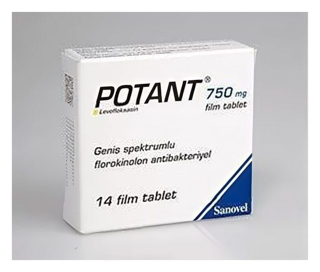

Potant 750 mg Film Kaplı Tablet, 14 Tablet

Ne için kullanılır
KT · Bölüm 1 POTANT ağız yolu ile uygulanan, sentetik, fluorokinolon türevi geniş spektrumlu bir antibakteriyeldir. Akciğer, sinüs, deri ve idrar yolu enfeksiyonu tedavisinde kullanılır. POTANT, 7 ve 14 film kaplı tablet içeren blister ambalajlarda takdim edilir. POTANT aşağıda belirtilen enfeksiyonların tedavisinde kullanılır: POTANT aşağıda belirtilen enfeksiyonların tedavisinde kullanılır:
• Toplum kökenli pnömoni (Zatürre) • Hastane kaynaklı (nozokomiyal) pnömoni • Kronik bronşitin akut alevlenmesi (Uzun süredir devam eden nefes alma zorluğu oluşturan solunum yolu enfeksiyonları) • Akut bakteriyel sinüzit (Sinüs iltihabı) • Komplikasyon yapmamış ve komplikasyon yapmış (şiddetli) üriner sistem enfeksiyonları (İdrar yolu enfeksiyonları) • Kronik bakteriyel prostatit (Uzun süredir devam eden prostat iltihabı) • Akut piyelonefrit (Böbrek enfeksiyonu) • Komplikasyon yapmamış ve komplikasyon yapmış (şiddetli) deri ve yumuşak doku enfeksiyonları (Cilt ya da cilt altı enfeksiyonları)
• Şarbon hastalığının mikrobunun solunum yolu ile alınma ihtimali durumunda (Maruz kalma sonrası inhale şarbon) •